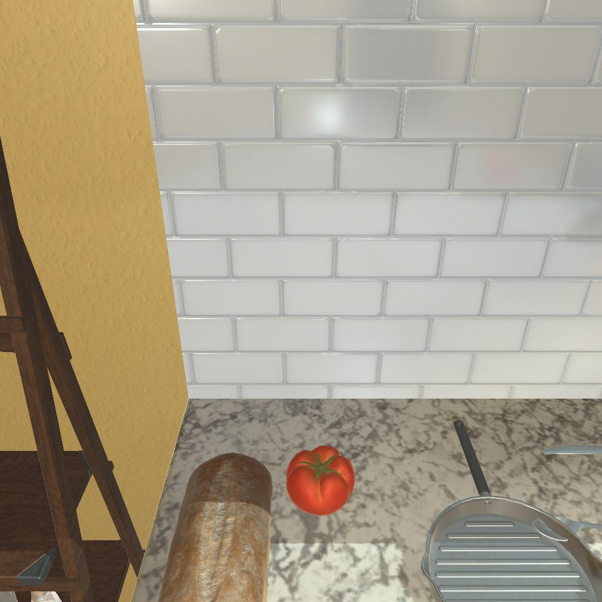

---------------------------------------------------------task: 16---------------------------------------------------------
--------------------------------------------------------------------------------------------------------------------------------------------------------------------
--------------------------------------------------------------------------------------------------------------------------------------------------------------------
Step:--------------------------------------------------------------------------8-------------------------------------------------------------------------------
----------------------------------------
VLM Prompt:
Image1:
Image2:
**Instruction**
1. Analyze the provided images to identify all visible household objects and compare the difference between images (e.h. whether the object is opened or not and taken on hand or not), focusing on those relevant to the task description "put a cool pan in sinkbasin."
2. Use the analysis of images and the task hint "The agent must find an object of the desired type, pick it up, go to a fridge, cool the object with the fridge, then find the correct location to place it, and put it down there. The agent does not need to use the fridge button or open the fridge to cool the object, and the agent just needs to do action that is "cool the object with the fridge"." to answer the question: what is the most reasonable action in the choices for the task description "put a cool pan in sinkbasin"?
3. Decide and write the answer using the template: The answer is: (i): , where i is the real number. If there is no desired object in images, search every place based on **Initial Observation** to find the object. And if no one is exactly correct, choose a similar answer.
**Initial Observation**
You are in the middle of a room. Looking quickly around you, you can see cabinet (1-9), countertop (1-3), drawer (1-9), stoveburner (1-4), microwave (1), sink (1), fridge (1), toaster (1), coffeemachine (1), sinkbasin (1), shelf (1-3), garbagecan (1)
**Answer Choices**
(1): go to cabinet 2
(2): go to countertop 2
(3): go to drawer 1
(4): go to drawer 2
(5): go to drawer 3
(6): go to drawer 4
(7): go to stoveburner 1
(8): go to drawer 5
(9): go to stoveburner 2
(10): go to stoveburner 3
(11): go to stoveburner 4
(12): go to cabinet 3
(13): go to cabinet 4
(14): go to microwave 1
(15): go to cabinet 5
(16): go to cabinet 6
(17): go to cabinet 7
(18): go to sink 1
(19): go to fridge 1
(20): go to toaster 1
(21): go to coffeemachine 1
(22): go to cabinet 8
(23): go to drawer 6
(24): go to drawer 7
(25): go to drawer 8
(26): go to shelf 1
(27): go to shelf 2
(28): go to countertop 3
(29): go to shelf 3
(30): go to drawer 9
(31): go to cabinet 9
(32): go to garbagecan 1
(33): open cabinet 1
(34): close cabinet 1
(35): examine cabinet 1
**Answer**
Let's think step by step by following the instructions.
----------------------------------------
----------------------------------------
Original Response:
Image Analysis:
In Image 1, we can see a tomato on the countertop and a pan on the stoveburner, which seems to be stoveburner 1, considering the position and angle of the image. There's also a salt shaker next to the pan.
In Image 2, we see two kettles on the stove, which seems to be stoveburner 2 and 3, and various kitchen appliances like a microwave and a toaster, but no pan is visible in this image.
Based on the task description "put a cool pan in sinkbasin," we need to find a pan, cool it with the fridge, and then put it in the sinkbasin.
From the initial observation, we know there is a stoveburner 1-4 and a sinkbasin 1. From the images, we can confirm the pan is on stoveburner 1.
The task hint tells us that we don't need to use the fridge button or open the fridge to cool the object; we just need to perform the action "cool the object with the fridge."
Given this information and the images provided, the most reasonable action for the task description "put a cool pan in sinkbasin" would be to go to stoveburner 1, where the pan is located, and then follow the steps to cool it with the fridge and place it in the sinkbasin.
The answer is: (7): go to stoveburner 1
----------------------------------------
----------------------------------------
>>> Refine Original VLM Response and Get Pure Action: go to stoveburner 1
----------------------------------------
-----------------------------------------------------------------
Running time: 16.686948776245117 seconds
Total Money: 7.593180000000006
-----------------------------------------------------------------
-----------------------------------------------------------------
Text Observation:You arrive at loc 8. On the stoveburner 1, you see a pot 1, a houseplant 1, a kettle 2, a dishsponge 1, a stoveknob 2, a stoveknob 1, a fork 1, a spoon 2, a stoveknob 3, and a kettle 1.
-----------------------------------------------------------------
UNSUCCEED